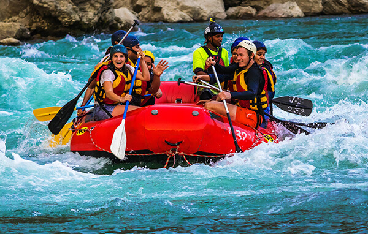
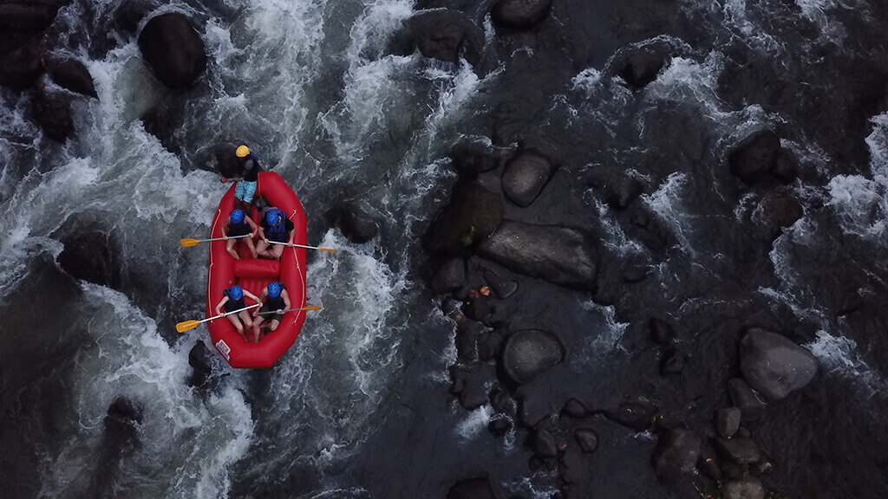

Whitewater rafting is a type of recreation that involves navigating a non-motorized watercraft down free flowing rivers. Rapids organizes trips, provides the watercraft, life jackets, etc., and typically offers experienced guides to take passengers down a river. Our intent is to provide a thrilling and safe experience to individuals and groups for a fee.


Rapids
History
Rapids was founded in 2003 by a group of passionate outdoor enthusiasts who shared a love for whitewater rafting. Over the years, the company has grown and evolved, but its core mission has remained the same: to provide thrilling and safe experiences for individuals and groups on the world's most beautiful rivers. In its early years, Rapids focused on developing a reputation for safety and excellence, investing in high-quality equipment and training its guides to the highest standards. As the company grew, it expanded its operations to new rivers and locations, always prioritizing the safety and satisfaction of its customers. Today, Rapids is a leading provider of whitewater rafting experiences, known for its expert guides, top-notch equipment, and unwavering commitment to safety and customer satisfaction. With a 20-year record of delivering unforgettable experiences, Rapids continues to thrill and inspire its customers, while promoting a deeper appreciation for the natural world.
Adventure Awaits You!